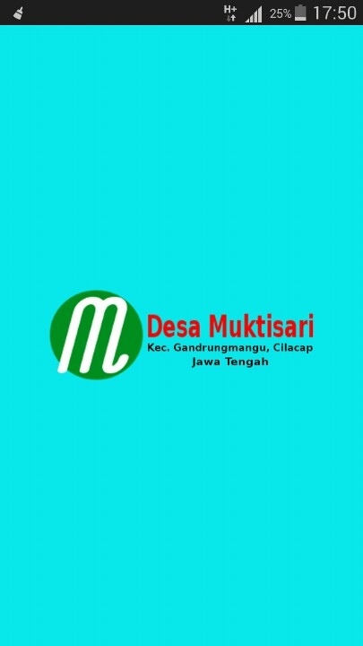
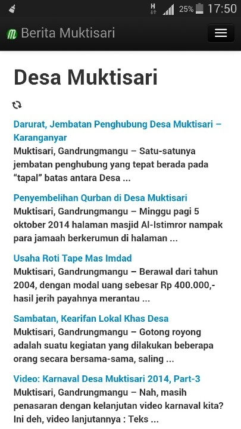
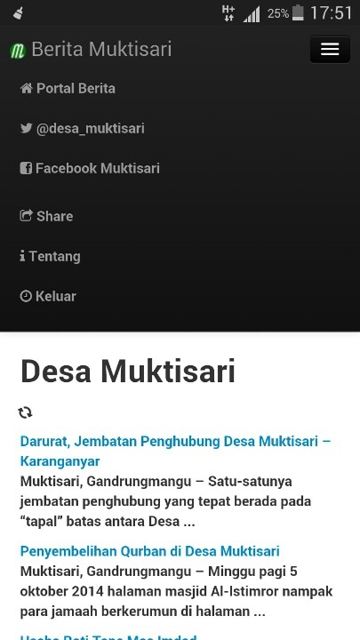
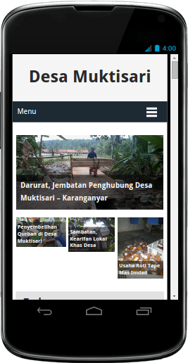
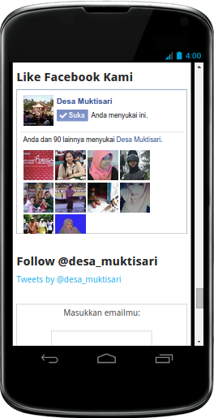
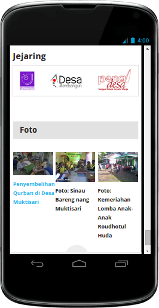

Berita Muktisari
Mobile Apps for Desa Muktisari Gandrungmangu created with PhoneGap
Desa Muktisari
Desa Muktisari adalah sebuah desa di Kecamatan Gandrungmangu, Kabupaten Cilacap, Jawa Tengah. Ini adalah aplikasi portal berita desa tersebut yang dikelola oleh para pemuda. Dapatkan informasi terkini dari Desa Muktisari langsung dari hape Anda dengan menginstall aplikasi ini.
Download
Unduh aplikasi dengan klik/scan qrcode berikut:
Changelog
Silahkan baca laman catatan rilis.
Screenshot
     Pengembang
Aplikasi ini dikembangkan oleh @samsulmaarif
Dukungan dan Kontak
Perlu bantuan install di perangkah Anda? Atau punya saran maupun masukan tentang aplikasi @Desa_Muktisari ini? Silahkan kontak pengembang di surel mail@samsul.web.id
Sarankan
Sarankan aplikasi ini ke teman Anda!
Tweet